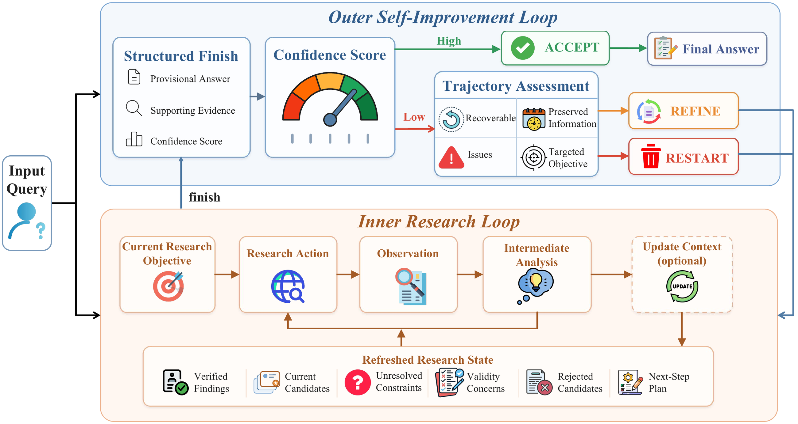

01研究背景与问题定义
深度研究任务的难点常出现在已经找到一个看似合理答案之后：它满足若干条件，却遗漏了时间限定，来源互相冲突，或尚有一条关键证据无法核实。继续沿当前轨迹搜索可能修复缺口，也可能把早期猜测越写越像事实；直接重做又会浪费已验证的信息。AREX 将研究执行与对研究过程的再决策分成内外两层。
内层负责搜索、浏览、证据整合和暂定答案；外层接收结构化结果，判断接受、保留进展继续修订，还是放弃整条轨迹重新调查。这里“递归改进”主要指同一问题上的反复研究与状态刷新；系统另有专门的中期训练和强化学习，不应把它误读成部署时修改自身参数。
| 研究断点 | 普通延长搜索的风险 | AREX 改变什么 |
|---|---|---|
| 已满足条件与待验证条件混在日志里 | 旧结论和原始结果反复挤占注意力，失效候选可能被重新采纳。 | 用研究状态刷新保留来源、否定证据和未决约束。 |
| 低置信度答案仍可能含有有效进展 | 简单重启丢弃证据，简单续写继承错误方向。 | 外层单独判断轨迹是否可恢复。 |
| 最终答案奖励掩盖中间关键决策 | 模型可能善于总结，却没有学会何时验证、转向和整理上下文。 | 训练强化决策关键步，而非平均重放所有中间行为。 |
核心自由度不是把检索次数调高，而是让下一轮的目标和继承状态随证据变化。这个设计的成立还依赖一个条件：模型对答案和轨迹的自评，必须能区分有价值的进展与自洽的错误。
02方法与技术路线
AREX 的研究策略在固定工具环境中运行。内层的结束只意味着形成一个可审查的暂定结果，外层才拥有整题终止或再启动的权限。
内层研究 · 搜索 / 浏览 / 验证
根据目标与有效上下文选择工具；新证据可推翻候选、改变检索方向。
状态刷新
压缩过时日志，保留来源、有效发现、否定证据、冲突和未决约束；后续行动读取刷新后的状态。
结构化暂定结果
答案 y + 支持证据 E + 0–100 置信分数 s；终止本轮，不自动终止原问题。
接受
s 达门槛 → 返回当前答案。
修订 / 重启
低分且可恢复 → 继承可靠进展并聚焦缺口；不可恢复 → 只从原问题开始。
内层研究：维护可行动的证据状态
每一步从原题、本轮目标和有效上下文决定推理与工具动作，工具返回后追加观察。新证据支持当前候选时，研究可以转向剩余约束；发现矛盾时，模型应比较来源权威性、直接出处和时间有效性，必要时放弃候选。这个转向是模型基于证据的判断，不是程序已经知道正确答案的确定性验证。
update_context 的作用不是仅因超长而摘要。模型可以在完成子问题、否定候选或改变计划时调用它，留下已核实发现及来源、有效候选、未解决条件和下一步计划。之后的有效上下文是该状态加上更新后的新交互。压缩因此成为研究状态转移，但如果摘要丢失反证，外层也会建立在受损证据上。
外层决策：接受答案、修复轨迹、抛弃轨迹
finish 将答案、证据标识和置信分数显式交给外层。达到门槛则接受；未达到时，模型继续判断轨迹是否含有可复用发现。可恢复分支留下可靠证据和待修问题，转化为下一轮针对性目标；不可恢复分支丢弃累积轨迹，以原题重启。
阈值比较是程序规则，置信分数与可恢复性却由模型形成。高分不是外部正确性证书，重启也不意味着数据分布改变。有限轮数是预算边界：超过预算仍无高分答案时，系统采用最高自评分结果，而不是保证得到满足全部条件的答案。
训练为何不只模仿完整研究轨迹
研究数据从真实来源先确定潜在答案，再组合可验证约束生成多跳问题，并筛除答案歧义、证据不足、过浅或过难任务。教师在相同研究环境中生成工具轨迹，再以交互有效性、证据可重建性和置信等条件过滤。数据因此含有任务构造与教师筛选带来的先验，不能只归因于推理循环。
训练先建立浏览取证能力，再加强专家推理，并通过混合巩固保留关键研究步骤。论文识别全轨迹训练后仍难学的关键动作，强化验证、研究转向与上下文维护；之后的 step-aware 强化学习继续区别中间决策的训练价值。它们补足了“会输出长研究过程”与“会作出关键研究决定”的差异。
论文原始结构图 · 点击对照

03实验设计与结果分析
内外两层是否分别改善研究执行
BrowseComp；内层 ACU 对照保持交互预算与其余工具，外层控制是否接受首次 finish。
| 上下文方式 | 无外层 | 有外层 |
|---|---|---|
| 不允许 ACU | 59.6 | 69.8 |
| 允许 ACU | 71.4 | 82.5 |
在不使用外层的匹配单轮条件下，状态刷新提高 11.8 点，支持有效状态比保留完整历史更有用。启用外层后两种上下文方式分别提高 10.2 和 11.1 点，说明再次研究也带来收益；两者共同作用优于只做一项。
外层额外轮次仍改变实际研究资源分配，这组结果不能完全区分续研策略与增加搜索量。置信分布对正确和错误有分离，但并不是完整校准曲线，不能由高分集中直接推出错误可被全部拦截。
关键步骤训练是否真的优于增加普通重放
BrowseComp，相同初始化；监督消融匹配监督 token 与优化预算，RL 消融保持 rollout 和训练日程。
| 训练变体 | 正确率 | 相对完整设置 |
|---|---|---|
| 完整 AREX | 82.5 | — |
| 以混合训练替代多轮能力训练 | 77.5 | −5.0 pp |
| 以随机步骤重放替代关键步监督 | 74.1 | −8.4 pp |
| 以标准 GRPO 替代 step-aware RL | 79.4 | −3.1 pp |
最明显的下降来自把关键步监督换成随机步骤，说明训练资源放在何处比简单重复轨迹更重要。这是相对完整训练配方的组件证据，不代表某个关键步类别单独贡献了 8.4 点。
多轮训练与强化目标也带来互补收益，因而终端分数不能全部归给外层递归。实验覆盖搜索、研究与工具推理基准，支持系统用途的广度；但区分“多轮多花搜索预算”与“更好地分配研究状态”的因果作用，还需要同预算控制。
如何解读系统效果与代价
论文将 BrowseComp、DeepSearchQA、GAIA、xbench-2510、WideSearch 英文集和带工具 HLE 用作不同研究需求的检验。它们分别强调深入检索、任务完成、覆盖与专家推理，不能把某一个汇总名次当成同一种能力的重复证明。对本文最关键的解读是：训练能强化长程执行，但仍需外层重新分配调查方向。
递归轮次、教师取证、训练关键步筛选都是资源消耗来源。若没有按相同成功率列出的搜索调用、总输入输出和时延，就不能由“选择性保留研究进展”直接推断净成本下降；最多能说设计避免了无条件重启带来的特定重复。
04贡献、局限与综合评价
核心贡献：研究也需要重开问题的策略
AREX 的概念贡献是将暂定答案提升为控制接口：答案要连同证据与不确定性提交，外层再决定修复还是重新调查。这比单纯延长思维链更明确地表达了研究中的状态继承。方法与训练共同构成可运行系统，关键步消融支持针对这些状态转换进行训练的价值。
自评与证据维护是同一条脆弱链
接受、继续和最终候选排序都依赖模型置信度。如果置信分数系统性奖励叙述完整度，高质量重述可能提前终止仍缺证据的调查；若 update_context 把冲突来源简化掉，外层也难以恢复丢失的反证。因此自评校准和状态保真并非两条独立小局限，而是直接影响递归能否纠错的联合条件。
更有区分力的验证，是固定总工具预算，对比自评门控、固定轮次和外部证据核验门控，同时测量高置信错误与被压缩反证的恢复率。若固定轮次同样有效，收益可能主要来自搜索量；若门控显著改善高置信错误，才更支持自我监控这一解释。
综合判断，AREX 展示了如何把研究进展组织成可续接、可丢弃的状态，并通过训练培养对应动作。现有证据支持一个有用的研究系统；对“递归能稳定识别并修复自身错误”的更强结论，则仍受自评质量与预算控制约束。